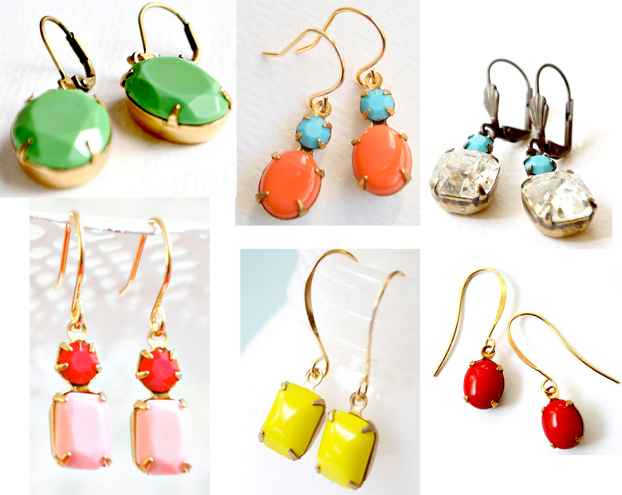
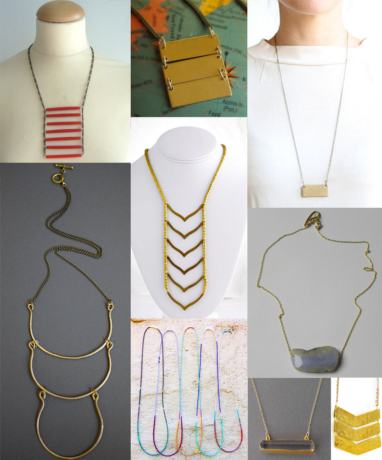
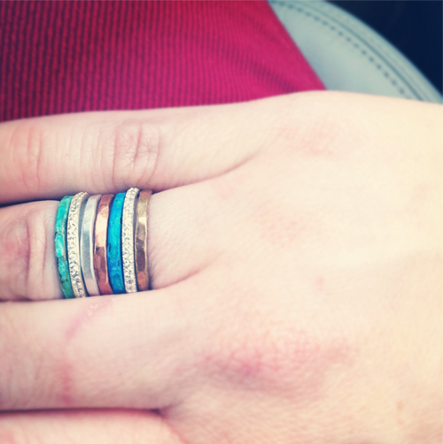

I’ve had this store favorited on Etsy for a while and I just love all the fun colors. I’m particularly drawn to all the dainty earrings, but they also have tons of other jewelry as well. I think these would be a perfect mother’s day gift!
Earrings that Pop!
April 23, 2013 by
Simple Necklaces
February 11, 2013 by

I don’t know what it is lately but I’ve been moving away from the chunky statement necklaces that I’ve always been drawn to. I seem to be eyeing more simple necklaces as opposed to crazy attention grabbing ones. These are all currently fav’d for me on Etsy.
red tribal necklace
3 brass rectangle necklace
Minimalist Geometric Gold Bar Necklace
Brass Necklace Artisan Brass Necklace with Hammered Arcs- Astor
Gold Chevron Necklace
Blue Lace Agate Geode necklace
Long Tribal Necklace
Gold Clear Double Faceted Crystal Bar Necklace
Gold Arrow Chevron Necklace
Bracelets Galore!
January 31, 2012 by

If you are looking for some any occasion dainty little bracelets, have I got an etsy store for you! Zzaval has got some SUPER cute and SUPER affordable bracelets. Best of all, most, if not all of the bracelets are made with an adjustable knot, so you can just slide it on and off easily.
Dainty Earrings
January 20, 2012 by

I alternate back and forth between wearing bold earrings and wearing tiny dainty earrings. These days I save the bold for going out sans kids and wear the dainty for daily wear. These are a few that I have my eye on…
- Comfits Earrings, Anthropologie
- Crystal Drops, Crystal B
- Moon Crescent Indie Earrings, Ruche
- Biwa Blossom Earrings, Sundance Catalog
My New Stack
January 10, 2012 by
I’m going to share with you one of the Christmas presents I got that I LOVE LOVE LOVE. These rings by Leslie Freeman Jewelry Design were gifted to me by my parents. I love the endless possibilities with these..you can wear them all or just a few or mix and match with other rings. Here’s what I did on the day I got them, I mixed them with some of my sparklies.

Holiday Gift Guide: Bracelets
December 13, 2011 by

I do not know what it is about bracelets this year, but I can’t get enough of them! Here are a few I wouldn’t mind finding under the tree with my name on it:
The Great Necklace Exchange of 2011
December 9, 2011 by

Hey everyone! I’m going to be participating in The Great Necklace Exchange of 2011 over on the Fashion Loves People blog. Go read about it, it sounds super fun and it clearly states that you don’t have to be a designer or even creative…SOLD! I was a little hesitant at first but I’m just gonna go for it and see what I can come up with. Who wants in? It’s the last day to sign up!!!
The Bar Necklace
December 5, 2011 by
Currently my everyday necklace is a gold rectangle bar with my sons’ initials on a silver chain. I’ve been quite partial to mixing the gold and silver lately. So when I saw these necklaces on Clementine etsy shop, I immediately fell in love and also think it would perfectly compliment what I already wear…just another layer. We all need layers right? Personally I think I’d get the gold chain/silver bar combo since my other necklace is the opposite combination.
Colorful Bands
November 8, 2011 by

I’m on the hunt for a colorful, sleek, modern ring to wear on my right hand. I had initially thought I wanted some kind of diamond-ish type of thing, but now I’m having second thoughts. I think that I wear so much turquoise all the time, that one of these babies might work instead.
1. Blue-Green Palette Ring
2. Global Village Band Ring
3. Red Jade Ring
4. Turquoise Windowpane Ring
Arhaus Jewels
September 26, 2011 by
I randomly got a catalog from Arhaus Jewels the other day and fell in love with a few of their items. You know if it involves turquoise I’m in.


Recent Comments